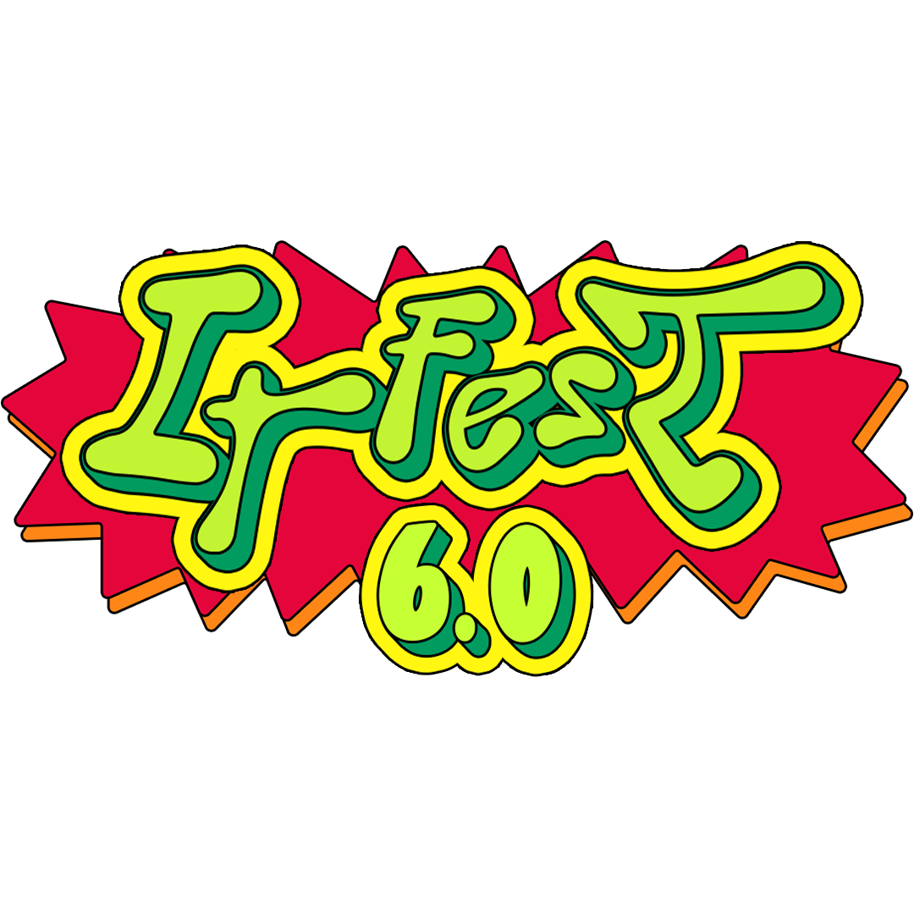

Latest News
Updates and announcements from IT FEST 6.0
Sorotan IT FEST 6.0
Ikuti informasi terbaru mengenai pengumuman, perkembangan kompetisi, serta berbagai rangkaian kegiatan IT FEST 6.0 Universitas Paramadina.

Memperkenalkan IT FEST 6.0
27 Jul - 14 Oct 2026IT FEST 6.0 hadir dengan mengusung tema “Human-Centered AI: Transforming the World with Integrity.” Tema ini menjadi landasan dalam menghadirkan rangkaian kegiatan yang mendorong pemanfaatan teknologi AI secara inovatif, bertanggung jawab, dan tetap berorientasi pada nilai-nilai kemanusiaan
 13 Oct 2026
13 Oct 2026
Talkshow IT FEST 6.0 dihadiri oleh mahasiswa dari berbagai program studi, media partner, serta jajaran pimpinan Universitas Paramadina. Para peserta turut mengikuti diskusi mengenai Human-Centered AI dan perkembangan teknologi yang berorientasi pada manusia

Fun Game: FC & Tekken
14 Oct 2026Peserta lomba berkompetisi dalam permainan FC dan Tekken sebagai bagian dari rangkaian Fun Game IT FEST 6.0.

Sponsor & Partners IT FEST 6.0
2026IT FEST 6.0 terselenggara dengan dukungan dari berbagai sponsor dan media partner, termasuk okup di lingkungan Universitas Paramadina. Terima kasih kepada Axioo, Pongo, Sari Roti, Merkle Innovation, Indonesia Cloud Community, PT Nirwana Cipta Global, Saiko Society, serta seluruh media partner yang telah mendukung dan berkolaborasi dalam menyukseskan IT FEST 6.0.

Expo Terbuka untuk Umum
13 - 14 Oct 2026Pameran IT FEST 6.0 terbuka untuk umum dan dapat dikunjungi oleh berbagai kalangan, termasuk siswa SMA dan mahasiswa. Pengunjung dapat melihat berbagai pameran karya yang diselenggarakan oleh IT FEST 6.0.

Terima Kasih, Para Peserta Lomba!
12 Oct 2026Terima kasih kepada seluruh mahasiswa yang telah berpartisipasi dalam kompetisi Hackathon, Internet of Things, dan Karya Tulis Ilmiah di IT FEST 6.0. Partisipasi dan antusiasme kalian turut memeriahkan rangkaian IT FEST 6.0.

Talkshow: Human-Centered AI
13 Oct 2026Talkshow terbuka untuk umum dan dapat diikuti oleh berbagai kalangan, termasuk siswa SMA dan mahasiswa. Acara ini menjadi ruang untuk berdiskusi dan memperluas wawasan mengenai penerapan AI yang berorientasi pada manusia.

Follow Us for Updates
2026Ikuti akun Instagram @itfest.paramadina dan TikTok @itfestparamadina untuk mendapatkan informasi terbaru, kabar terkini serta berbagai sorotan seputar IT FEST 6.0.
Stay Connected
IT FEST 6.0 merupakan festival teknologi yang diselenggarakan oleh Himpunan Mahasiswa Informatika (HIMTI) dan Program Studi Teknik Informatika Universitas Paramadina. Berlangsung pada 27 Juli hingga 14 Oktober 2026 dengan mengusung tema “Human-Centered AI: Transforming the World with Integrity,” acara ini menghadirkan berbagai kegiatan bagi mahasiswa, kreator dan para pendukung teknologi melalui kompetisi, talkshow, expo, fun game dan bazar.
“ Rayakan kreativitas bersama IT FEST 6.0. Dari kompetisi Hackathon, Internet of Things, dan Karya Tulis Ilmiah hingga talkshow, expo, fun game dan bazar, IT FEST 6.0 menghadirkan berbagai kegiatan untuk belajar, berkarya dan juga berbagi ide. Teknologi terus berkembang dan sudah seharusnya tetap digunakan dengan integritas. ”